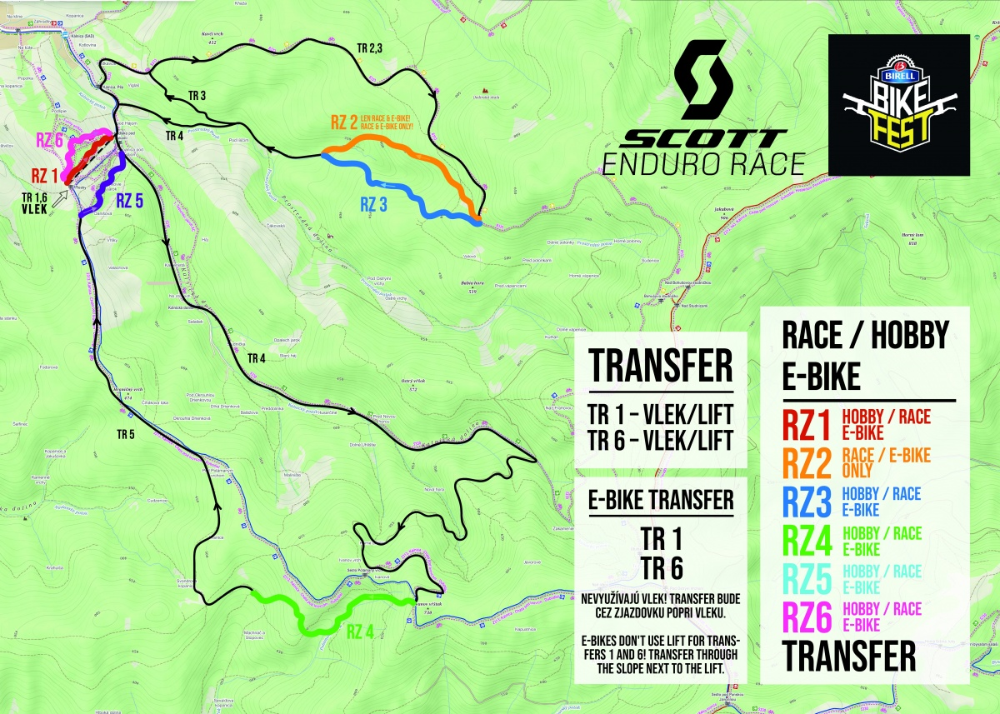
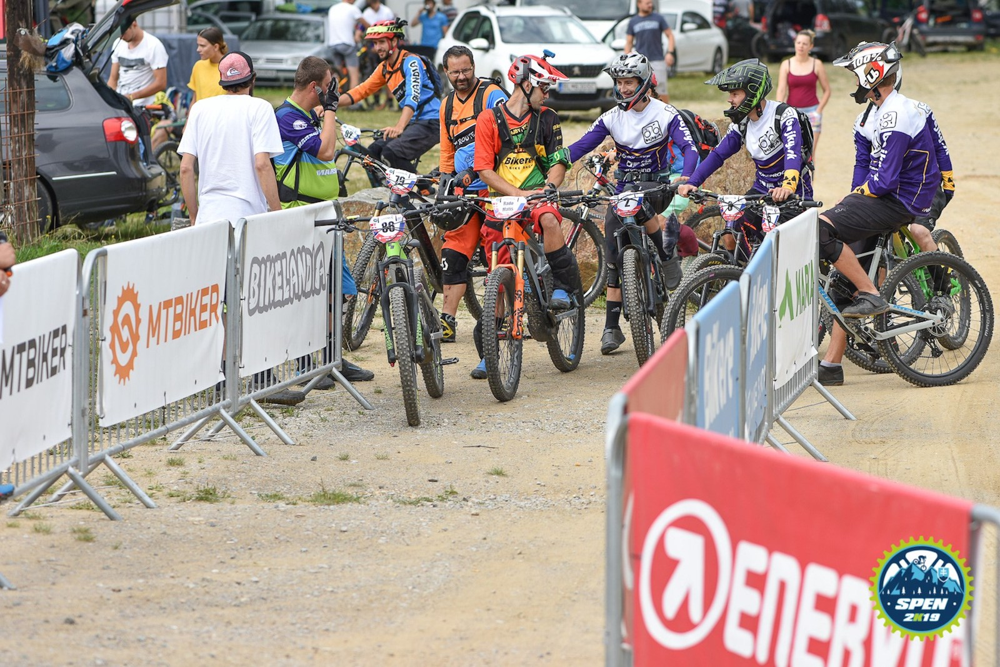
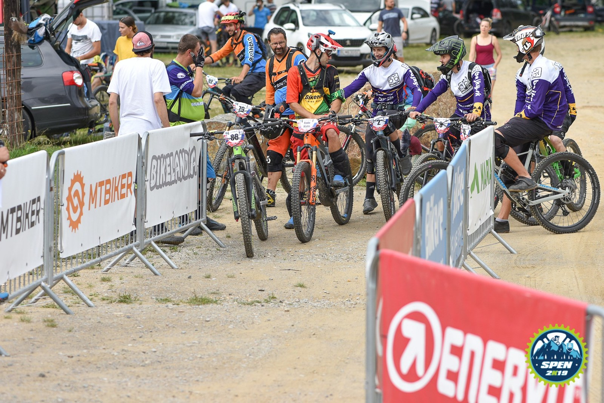
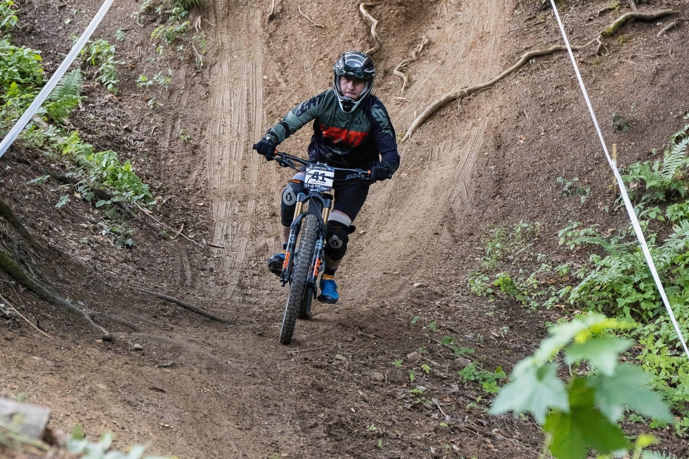
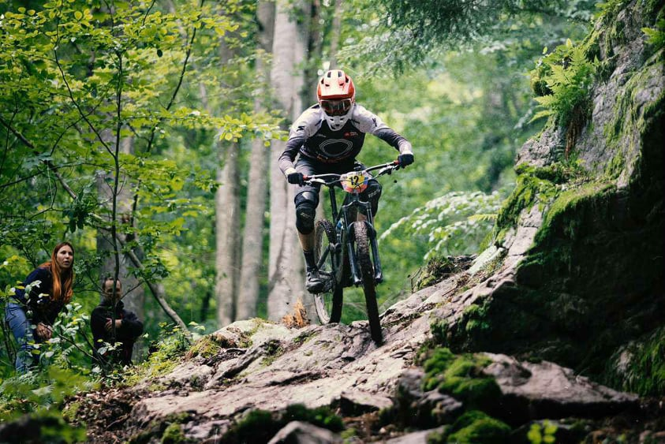
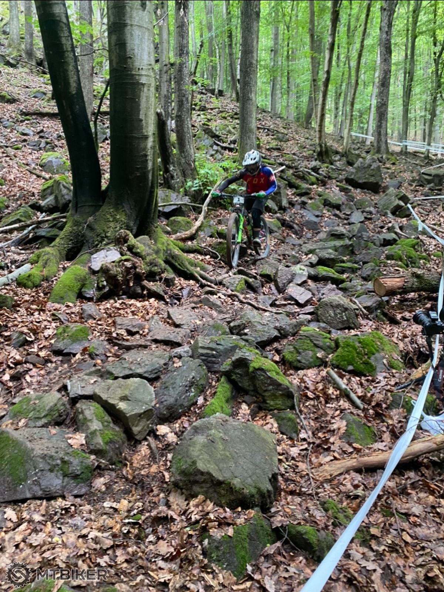
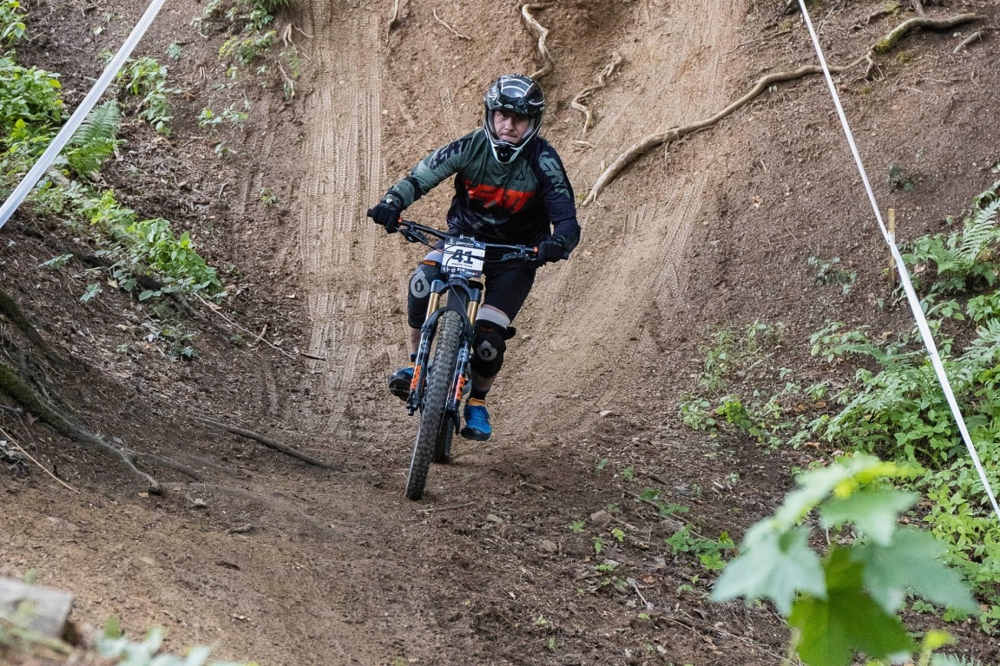
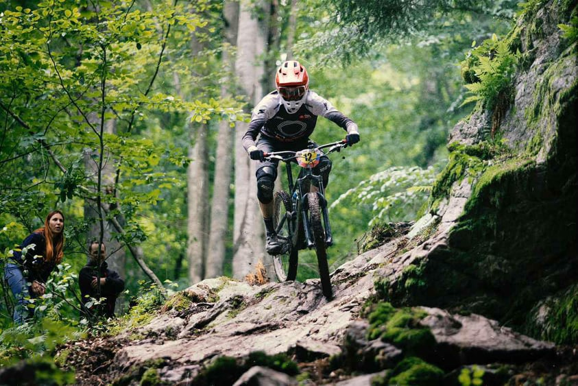
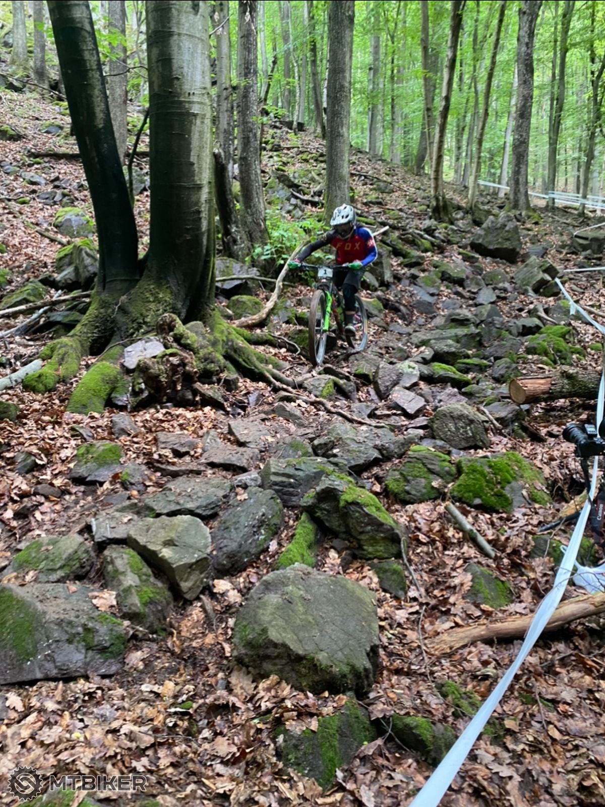

Výsledok
RS1: 01:29.90 (~14 race, ~4 hobby) RS2: 03:37.85 (~13 race) RS3: 04:13.70 (~13 race, ~4 hobby) RS4: DNF RS5: DNF RS6: DNF
4.6.2022 - Nedokončený pretek - odtrhnutý šroub na kyvadle a takisto odtrhnuté radenie po pádoch na RS2 a RS3.
Víkend začal výborne, vyzdvihol som si karavan v karavan.sk a zakempoval vo VIP zóne na Bikefeste. Piatkový tréning bol v peknom počasí a prešiel som si všetky RS (šliapanie na RS4 ma skoro zabilo a to som ho išiel na požičanom Scott Spark - nabudúce radšej požičať nejaké elektro)
Trate:
- RS1 sa jazdí na trati Comeback(5) v bikeparku (na rovnakej trati sa jazdil aj nedeľný downhill).
- RS2, RS3, RS4 sa nachádajú mimo bikeparku.
- RS5 sa jazdí na trati Slovenský pohár(6), ktorý je v lesíku za Big airlline(16).
- RS6 sa jazdí na trati Funny enduro(1)
 Mapa Bikepark Kálnica (3D
vizualizácia )
Mapa Bikepark Kálnica (3D
vizualizácia )
V noci z piatka na sobotu sa spustila búrka, ktorá trate povrchom priblížila k tým v Oščadnici - RS2 a RS3 boli samé blato, šmykľavé korene a na konci RS2 ako bonus premočený rock garden. Bicykel dostal zabrať a radenie mi už po RS2 viselo na kábli. Po RS3 som sa pokúšal dotiahnuť šrouby na kyvadle, ktoré malo vôľu a šroub nanešťastie povolil (odtrhol som ho), takže bolo po preteku.
V nedeľu som si už len užíval víkend v karavane a odskúšal niekoľko test bikov. A top bolo sledovať tých najlepších v súťaži v zjazde na už spomínanej Comeback(5)
Komplet výsledky: race, hobby a reportáž na MTBIKER.sk



 

 




